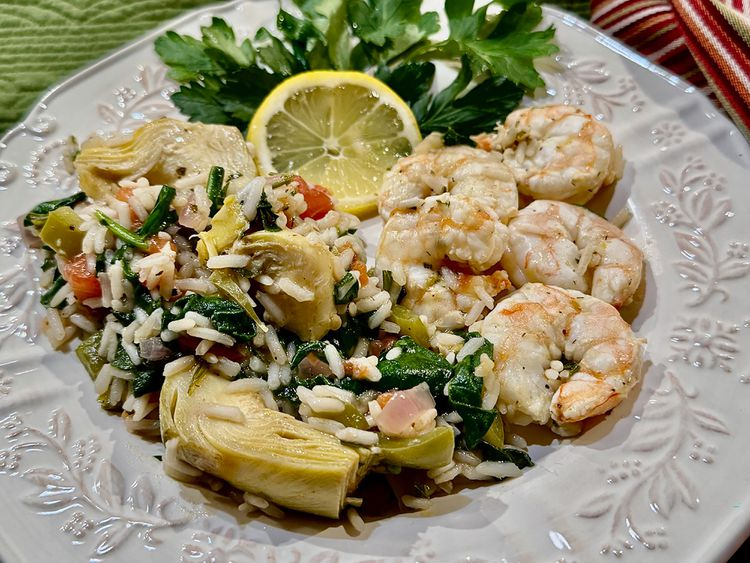

Back
One Pot Mediterranean Shrimp and Vegetables

This one pot Mediterranean shrimp and vegetables, colorful and full of flavor, is sure to please. Lemon, garlic, tomato, red onion, bell pepper, parsley, and spinach combine with shrimp and rice in one pot, making a Mediterranean-style dish that checks all the boxes—and the ease of cleanup doesn’t hurt a thing!
Ingredients:
-
1 lemon, divided
-
5 tablespoons olive oil, divided
-
3 cloves garlic, minced, divided
-
1 1/2 teaspoon salt-free Greek seasoning, such as DAK, divided
-
1 pinch salt
-
1 pound peeled and deveined shrimp, 21 to 25 pieces per pound
....
Steps
-
Cut lemon in half; cut one half into thin slices and set aside.
-
Add shrimp to the bag, reseal, and gently move shrimp inside the bag to coat with marinade.
-
In a Dutch oven, heat remaining 2 tablespoons olive oil over medium heat.
-
When oil shimmers, add onions, bell peppers, and rice.
-
Add diced tomatoes and their juices; pour in chicken broth and wine.
...